Experience the open CRM
built for missions.
Powered by 
Features
Contributions
Online giving, contribution receipts, check scanning, donor self service, and more.
Missionary Finance
Track support requirements and donor commitments. Give workers access to their donors and contributions.
Donor Engagement
Map your donor and churches, log visits and other interactions. Send mass communications and track follow-ups.
HR Management
Track worker locations, job roles/ministry responsibilities, service lengths, awards, PTO, supervisors, and benefit plans.
Mobilization
Capture leads and create custom mobilization pipelines. Accept applications and share them with your team.
Trip Management
Registrations, background checks, fundraising, self-service portals, and detailed reporting for short term trips.
Online Training
Create classes, assignments, resource catalogs, and education plans for your team.
Websites & Content
Host your website, giving pages, or blogs. Create logins and web pages for your constituents.
...and much more
Rock is an open source, extensible platform, built by the Spark Development Network for the glory of God. Learn more at rockrms.com
Pricing
Rock is an open-source application supported by donations. For churches, they provide a donation calculator on their pricing page. For other non-profits, their FAQ asks you to reach out to info@sparkdevnetwork.org for a suggested donation amount.
Self-Hosted
Free
Self-Hosted Cloud
$150/month
Starting at
Support and Monitoring
$500/month
Starting at
Let's Connect
Ready to enhance your ministry with technology?
Email Us